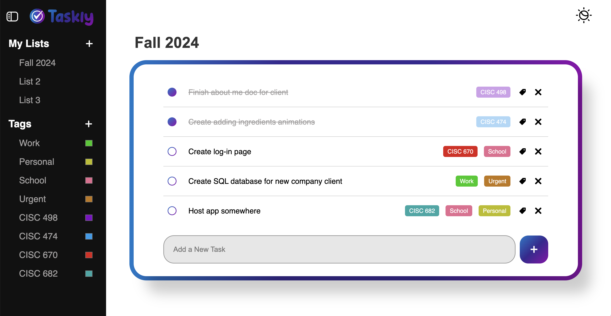

Log In
Write it. Do it. Done. We make it easy.
Your productivity starts here. Say goodbye to messy scribbles and relying on memory to remember all your tasks. Get things done with the #1 to-do app.
Register Now
